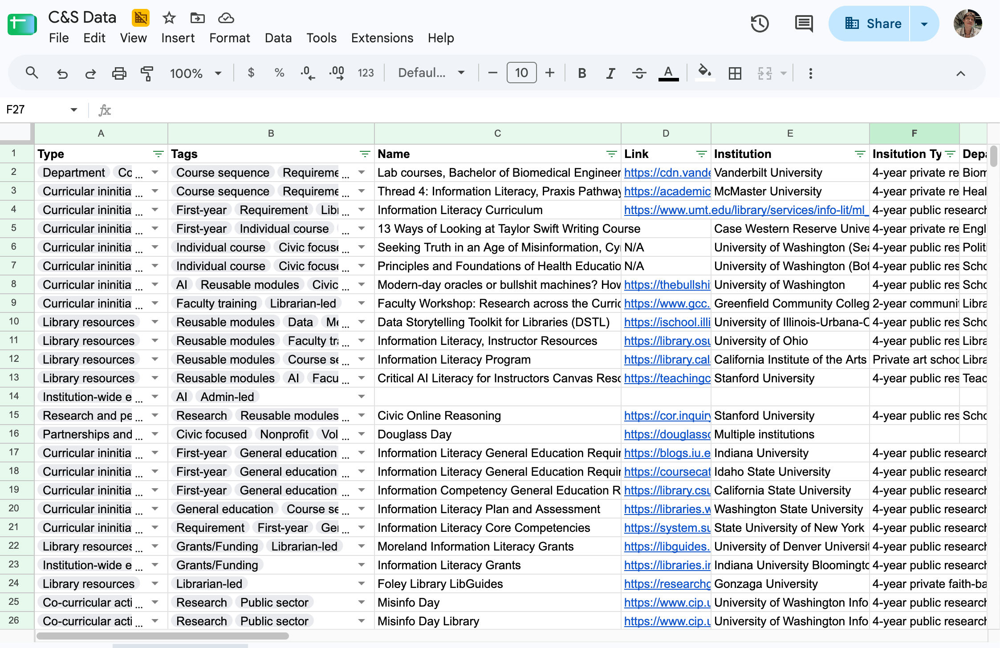
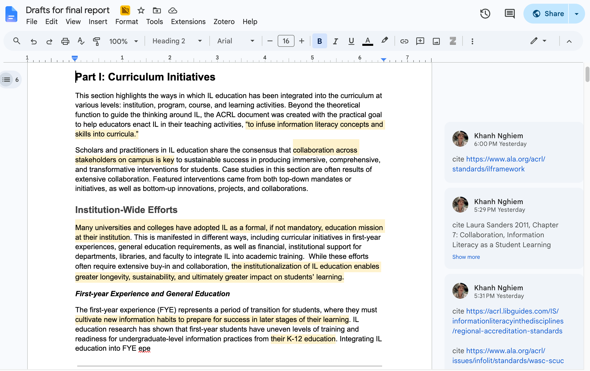

DFW: Information Literacy in Higher Education Landscape Study
Khanh Nghiem
This page provides documentation and personal reflection for my Directed Fieldwork course LIS 590 in Summer quarter 2026. Between June 15 and September 15, I was a part-time research assistant (20hrs/wk) at the Center for an Informed Public (CIP) at the University of Washington. My responsibilities were:
- Conduct desk research on the topic of Information Literacy education at universities and colleges in the US
- Produce a report for the Institute for Citizens and Scholars (C&S)to distribute for their member institutions in the Campuswide Immersion (CWI) program.
My supervisor was Chris Coward and my collaborator was Sarah Tran.
Scope of Work
I worked with Sarah to study the landscape of Information Literacy programs in US higher educations. We searched for curricular initiatives and extra-curricular activities on college campuses that aim to cultivate information literacy for students. We conducted literature review on the topic of information literacy within LIS academic research and communities of practioners.
As we collected data and formed our thinking about the topic, we also wrote draft that will constitute a landscape report to be read by members of the CWI program. C&S will share the report with College Presidents and Action Councils made up of faculty and campus stakeholders that are in charge of building these intervention programs.The goal of the report is to provide well-researched insights, a broad range of considerations, and a set of curated practical examples to help CWI members create Civic Fluency intervention programs, specifically for the Credible Information pillar (according to the CWI Manual).
Artifacts
These artifacts are only accessible to authorized personels at University of Washington:
Some screenshots and images from my experience:


Weekly Reflection
Week 1
After the kick-off meeting, Sarah and I started collecting examples of information literacy (IL) programs. I focused my initial search to initiatives at historically black colleges and universities (HBCUs) and community colleges, as I believe they would yield broader considerations around diversity, equity, and inclusion. Later, I encountered Professor Sandy Littletree's paper on Indigenous IL that formed my thinking about the contested nature of Information Literac, specifically how the dominant conception and practice around information literacy disserve Indigenous students, librarians, and faculty, as well as creative adaptations from Indigenous scholars and educators to invent their own model and practice. This inspired me to further investigate the debates about IL and how the discourse has evolved.
Week 2
Questioning more about IL as a concept led me to learn about the ALA ACRL (Association of College & Research Libraries) Framework for Information Literacy for Higher Education. This document is widely used across universities and colleges in the US as guidance for building and enacting IL programs. In 2000, ACRL published the first guidance document titled Information Literacy Competency Standards in Higher Education, which was deprecated with the adoption of the 2016 Framework. At the time of this project in 2026, the ACRL is actively revising the Framework to incorporate new ideas from IL debates and address challenges with emerging technologies. The first draft was shared publicly for feedback last April. I created a presentation for my team and C&S, analyzing the changes across the three versions and argue we should base our case studies and recommendations according to the direction of change of the ACRL document, which is towards a more socio-cultural, ethical, reflexive, and situated approach to IL. This set the foundation and frame of reference for conversations throughout the project.
Week 3
I gave the presentation to the cient during the checkpoint meeting, which was met with positive feedback. Given this approval, I started writing up in prose analysis of the three versions (Standards, Framework, and 2026 Draft) for the report. I also joined the Writing Group at UW CIP led by Rachel Moran to get more motivation for writing. For my research of IL programs in week 3, I focused on how libraries are conducting interventions, focusing on traditional modes like libguides and adhoc one-shot instructions. I spent time learning about best-practices that librarians have shared with each other to conduct these interventions. Later in the week, I expanded my search beyond library-leinterventions. I looked at interventions led by faculty, students, and community partners. This seems to be a promising structure to segment the landscape, I want to propose to my team and the client.
Week 4
The week 4 checkpoint with the client was delayed for a week due to scheduling conflicts, which gave me time to reconsider how I want to share back my findings with them. I decided to scrap my presentation idea from week 3. Instead, I focused on refining my draft on evolution of IL to get feedback on the tone and writing direction. For further literature review, I followed the trail of citation from previous sources to learn more about the IL discourse. This week I found a lot more criticism for the dominant approach of IL education, including pushback against the Framework. Engaging with disagreement and criticism is intellectually fulfilling and interesting for me. Sarah and I did some experimentation with how we want to format and present the case studies in the report: what kind of metadata and what level of description would be appropriate. We decided to hold off from proposing any new theoretical orientation, and focus on getting feedback from the client about the formatting and presentation of data in the report.
Week 5
During the client checkpoint meeting, I got the confirmation from the client that they want forward-thinking and more experimental approaches to IL education. That means, engaging with criticism for the dominant, established approach to identify more promising ideas and implementations was the right direction for research. The client also mentioned wanting to engage with STEM faculty and programs, so I paid more attention to collecting examples for STEM-specific IL efforts. While the client interactions continue to go well, tension was bubbling in internal meetings, stemming from disagreement about how we envision presenting IL efforts related to AI. My supervisor and collaborator were concerned I was bringing too much personal conviction around this topic into this project. This was a huge lesson for me, not because I or my teammates were wrong in our position, but I needed to learn how to delicately approach contested and emotionally-charged topics. Luckily, the tension got dissolved once my team saw that I can represent in good faith a wide range of perspectives on AI in my writing, which later got kudos from the clients.
Week 6
The client provided us with an updated version of their CWI Manual, which provided invaluable insights about how our work and final report will be used. I took time to carefully review and annotate this document, so I can accurately reflect their positions and priorities in the final report. I continue to read more of the literature and write as I went along. By this time, I have read over 100 sources and learned a lot about IL as a research topic and practice area. This week, I reached out for help through email correspondence with a leading researcher in IL, the editor-in-chief of the Information Literacy Journal, Professor Alison Hicks at University College London. She was very helpful in providing guidance and pointers to sources.
Week 7
Our checkpoint with the client is delayed once again, giving me more time to build out our report draft. However, they asynchronously provided feedback on the current draft, mostly flagging points they are interested in further expansion and details. For our corpus of example IL interventions, the client provided a list of metadata fields and features that they are interested in to enable lookup and browsing. Based on the client request, I implemented a spreadsheet that included all the metadata fields and filters for better finding aid. We had an internal meeting that outlines our plans and milestones for the remaining 6 weeks of the project.
Week 8
In the last check in with the client, we reviewed a draft that was about 30% finished. The client gives positive feedback and we went over logistics for the final draft. This week I focused on writing and revising for a more coherent narrative structure.
Week 9
Even though this was the last week of the DFW, I still have 4 more weeks before the end of the research project. Sarah and I decided to restructure the report with a different outline to have even more coherence in narrative. I had a meeting with the supervisor Chris to get feedback as part of the DFW. He praised my intuition and rigorous approach to research, and my proactive communication with the client. He gave me developmental feedback for writing collaboration and time management in discussions, as sometimes I dwelled too long on one topic, leaving less room for other important conversations. Chris shared the good news that C&S enjoyed our work so much that they want to continue collaborating with us throughout the next school year, and a new project is being scoped. He and UW CIP want me to join these future projects as academic schedule allows.
Overall, this has been a transformative experience, as it is my first time conducting research outside of coursework. I learned a lot about Information Literacy and IL education in universities and colleges, which will be very helpful for my Academic Librarianship course next quarter. I saw first-hand how LIS research can provide practical values for organizations such as C&S and their members. I gained new skills in research and collaboration. I am excited to continue honing my expertise and practice in this field for the remainder of this project and future projects.